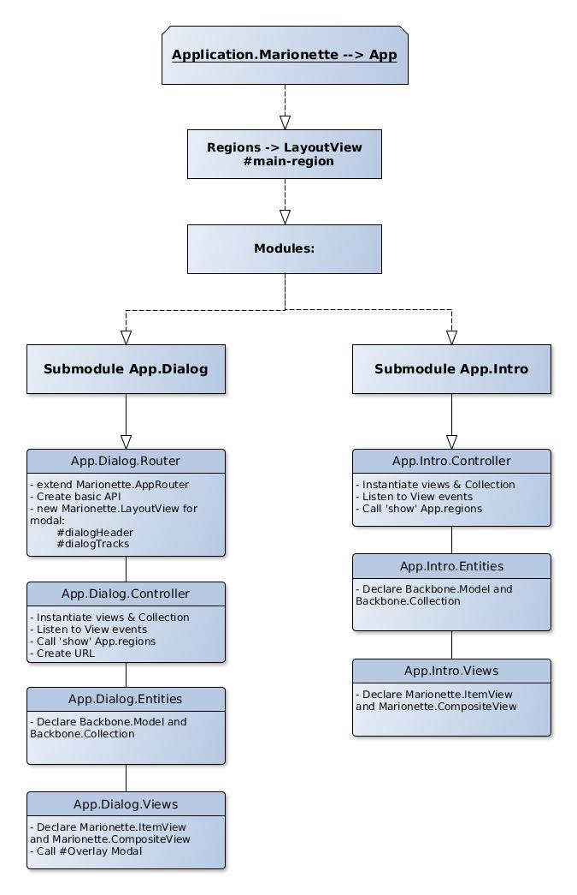

About this App
This App has been built using Backbone and Marionette. Marionette provides Backbone apps with the tools he is missing by default, such as:
- Composite application architecture
- Modularization options and Messaging Bus
- Incremental use
- Application, Controller and Router constructors
This is a simple App which could have been built with vanilla JS. The
purpose of building it with a JS MVC Framework is for it to benefit
of a future scalability and maintainability. The actual objective of building
this App was for training purposes.
Github Repo
The following map explains how the architecture of this application was designed before starting.
